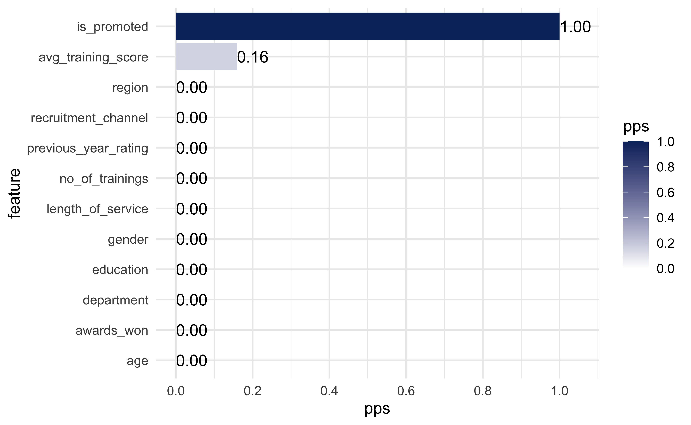

Figure 1: Example PPSR matrix using mtcars dataset
1. Predictive Power Score
Show code
cleaned_promotions_tbl %>%
select(-employee_id) %>%
visualize_pps(y = 'is_promoted', do_parallel = TRUE)
2. Correlation Funnel
3. DataExplorer
Default Heatmap
Show code
corr_plot <- cleaned_promotions_tbl %>%
select(-employee_id) %>%
DataExplorer::plot_correlation(
theme_config = list(
legend.position = "none",
axis.text.x = element_text(angle = 90)
)
)Interactive Heatmap
Show code
corr_plot$data$value <- round(corr_plot$data$value, digits = 2)
plotly::plotly_build(corr_plot) %>%
plotly::layout(width = 700, height = 700) %>%
plotly::config(displayModeBar = FALSE)